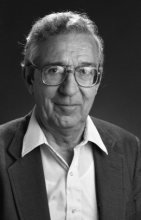

Please note: the AAS Obituaries are temporarily being hosted on this website while their full content is being ingested into the PubPub publishing platform newly adopted by the Bulletin of the American Astronomical Society. When the migration is complete, your existing links will take you to the final, migrated content. Contact peter.williams@aas.org with any questions.
Arne Slettebak (1925-1999)
The Ohio State University Department of Astronomy is sad to announce the death of Professor Emeritus Arne Slettebak on May 20th, 1999, following a short illness. Arne was born of Norwegian parents in Freistadt Danzig (now Gdansk, Poland) on August 8th, 1925, and emigrated to the United States with his family in 1927, becoming a US citizen in 1932. He graduated with a BS in physics from the University of Chicago in 1945 and received a PhD in 1949, with a thesis on rotational velocities of O and B stars guided by W.W. Morgan. He began his professional career as an instructor at The Ohio State University (OSU) in 1949, becoming full professor in 1959, when he assumed the directorship of Perkins Observatory, a position he held until 1978.
Slettebak was instrumental in returning astronomy at Ohio State to the status of an independent department in 1962. As chair from 1962 to 1987, he led the effort to build up the department in the post-Sputnik era. He supervised its move from the decaying McMillin Observatory and Orton Hall into quarters in the then-new Smith Physics Laboratory addition. Arne was also instrumental in forging the agreement among OSU, Ohio Wesleyan University, and Lowell Observatory to move the 69-inch Perkins telescope from Perkins Observatory in Delaware, Ohio to Lowell in Flagstaff. There its optics were upgraded to a 72-inch mirror, which served as the department's primary research instrument until 1998.
During his career as a teacher, Arne supervised 8 MS and 5 PhD dissertations, the latter including those of Simon Simsonson III, David Meisel, Kenneth Kissell, Allan Markowitz, and Raymond McNeil. He held Fulbright fellowships at Hamburg and Vienna and visiting professorships at Vienna and Strasbourg. He retired from OSU in 1994, after 45 years of service, but continued to be active in research until shortly before his death, publishing more than 90 papers, abstracts, and articles over his 50 year career, the most recent in 1998. At the time of his death, he was working on a history of the department.
Slettebak's research interests centered around Be stars and stellar rotation. His work bridged the gap between the largely morphological astronomers of the first half of the century and the more quantitative efforts ushered in by computing advances in the second half. His careful and detailed observations of stellar rotational velocities, interpreted initially with the graphical model of Shajn and Strüve, were later re-interpreted with far more rigorous models of rotating atmospheres and still constitute some of the most reliable projected rotational velocities in the literature. His years of poring over the shallow line profiles of the most rapidly rotating stars left him with a profound understanding of the systematic errors inherent in determining values of v sin i. It is these conservative error estimates that lent such authority to his results. It was his love of Be stars, however, that led his research interests from his doctoral thesis until his death. He organized IAU Colloquia Nos. 4 and 92 (the latter with Ted Snow) on the subject and was active in numerous other conferences. Ironically, IAU Colloquium 175 on Be stars was to be dedicated to him, but with characteristic humility he asked that it be dedicated to his good friend Mercedes Jaschek, who died shortly before Arne.
In the larger astronomical community, Slettebak served as a councilor of the AAS from 1964 to 1967 and was a member of the AAS Education and External Awards Committees. He was a member of Commissions 29, 33, and 45 of the International Astronomical Union and served as vice-president and then president of Commission 45 (Stellar Classification) from 1976 to 1982. He represented OSU on the AURA Board from 1961 to 1978 and was chairman of its Scientific Committee from 1970 to 1973.
We will all remember Arne for his many contributions to the department and to astronomy. His leadership style emphasized collegial respect within the department, a legacy later Chairs have been determined to maintain. He was truly a gentleman and a scholar, and we will miss him very much.
Photo courtesy of Ohio State University
Obituary written by: Richard Pogge (Ohio State University), Gordon Newsom (Ohio State University)
BAAS Citation: BAAS, 2000, 32, 1686
SAO/NASA ADS Bibcode: 2000BAAS...32.1686P